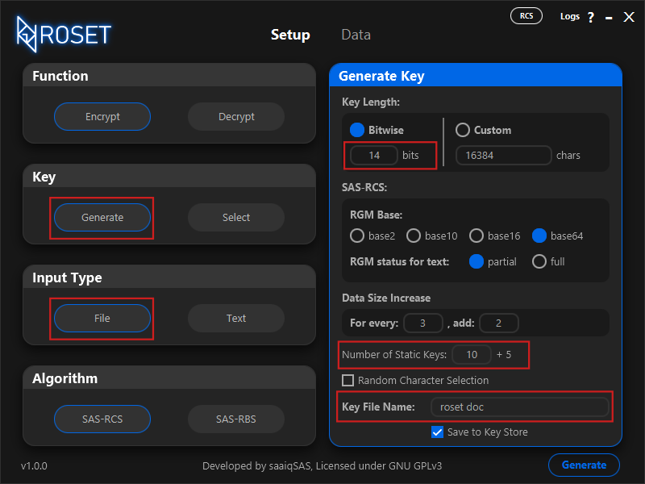
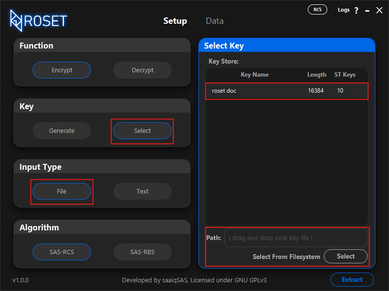
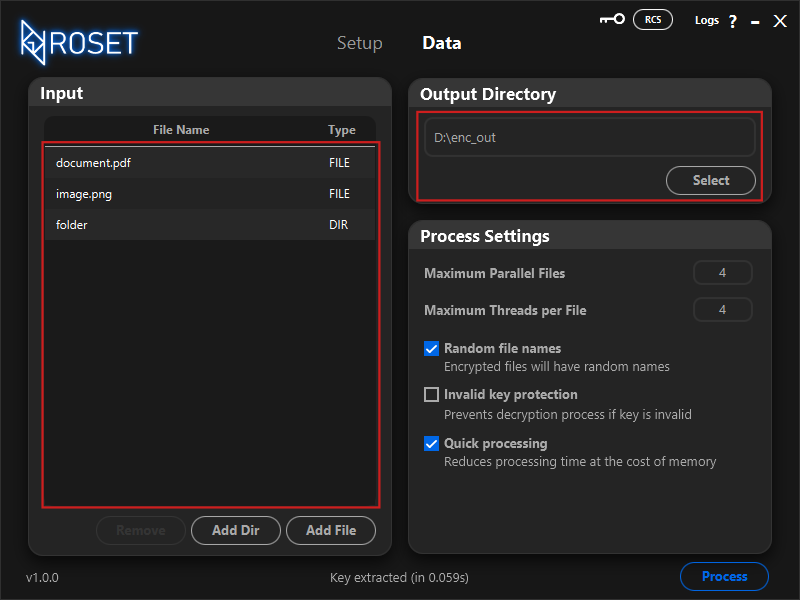
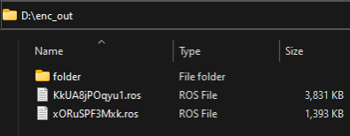
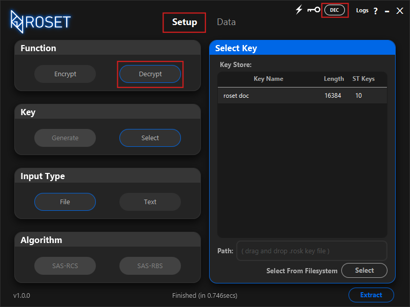
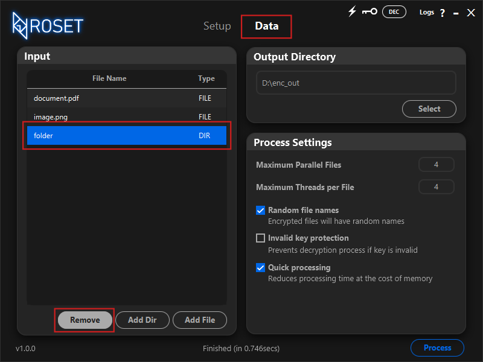
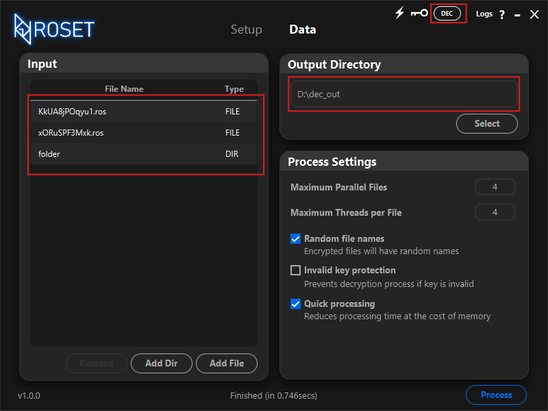
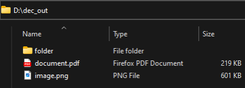

5. Encrypting Files by: saaiqSASLast Updated: 18/2/2025
In this section, we'll walk you through the steps to encrypt your files using the ROS Encryption Tool.
You have the option to either create a new encryption key or select an existing one to keep your data safe and secure.
Setup KeyGenerate Key
To create a new encryption key, simply select the Generate option in the Key section. From there, you can adjust the settings in the Generate Key area based on your preferences.
For a simple and effective key, we recommend setting the key length between 10 and 16, and choosing the Bitwise option (with a range of 7 to 20). You can also modify the
Number of Static Keys (up to a maximum of 100). The default settings for other options should work well for most cases.
After you've customized your key, give it a name by entering it in the Key File Name field, and click the Generate button to create your key.
As you'll be encrypting files, make sure to choose the File option under the Input Type section. (Fig5.1)
If you'd like to learn more about the options and how they impact encryption, visit the
Generating Keys section for detailed information.
 Fig.5.1Select Key
If you want to use a previously generated key, you can select it from either the Key Store or your local file system. To do this, click on the Select option in the Key section.
In the Select Key area, you'll have the option to choose your key from the Key Store, or you can browse your file system by clicking the Select button.
Another option is to simply drag and drop the key file directly into the Path field.
As you’ll be encrypting files, be sure to select the File option under the Input Type section. (Fig5.2)
 Fig.5.2Encrypt Files
Before you begin encrypting your files, make sure you've selected the encryption algorithm you want to use under the Algorithm section in the Setup tab.
SAS-RCS provides text-level encryption, so your output files will be encrypted text files. On the other hand, SAS-RBS offers binary-level encryption, resulting in output files that are non-text (plain binary).
After clicking the Generate or Select button, the key will be loaded into memory. You’ll then be automatically redirected to the Data tab.
In the Input section, you can easily drag and drop the files or folders you wish to encrypt. Alternatively, you can use the Add File button to add files, or the Add Dir button to add directories/folders. (Fig5.3)
Once all the files you want to encrypt are listed in the table in the Input section, you can choose where the encrypted output should be saved.
In the Output Directory section, simply drag and drop or select a folder/directory to store the encrypted files. (Fig5.3)
Additionally, you can customize settings in the Process Settings section to optimize the encryption process according to your needs.
If you're looking for faster processing times, increasing the Maximum Threads per File can help. For better performance when processing large batches of files,
consider increasing the Maximum Parallel Files. Keep in mind that raising these values will require more system resources, such as memory and processing power,
so adjust them according to your system’s capabilities.
 Fig.5.3
Once everything is set, click the Process button to begin encrypting your files. An encrypted copy of your files will be created in the output directory or folder you specified. (Fig5.4)
 Fig.5.4Decrypt Check
It’s crucial to ensure that your encrypted files can be properly decrypted. To verify this, go to the Setup tab and select Decrypt under the Function section. (Fig5.5)
 Fig.5.5
Afterward, go back to the Data tab. In the Input section, select each of the original files and remove them by clicking the Remove button. You can also clear the entire table if needed. (Fig5.6)
 Fig.5.6
Once the table is empty, drag and drop the encrypted files into the Input section. Then, select an output directory or folder where the decrypted data will be saved. (Fig5.7)
 Fig.5.7
Once everything is set, click the Process button to begin decrypting your files. A decrypted copy of the files will be created in the output directory or folder you specified. Afterward, check if the files can be opened or executed without any issues. If everything works as expected, you can safely use the decrypted data with its corresponding key. (Fig5.8)
 Fig.5.8
If an error occurs, try using a different key. If the issue continues, please report the bug using the links at the bottom of the main page in the official ROS Encryption Tool documentation.